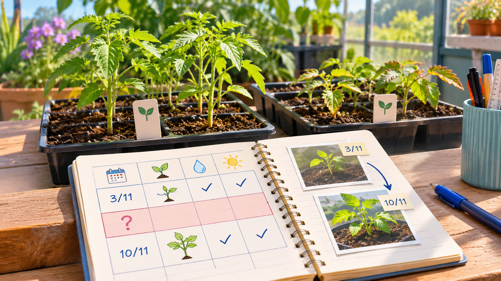

צמחים וחקלאות
השתילים בחופשה
הצמחים לא יודעים שהתחילה חופשה

סוף הסמסטר מתקרב
"יש להם מושג שאנחנו יוצאים לחופשה?" שאלה נור בת העשר, כשהביטה בשתילי הירקות שגידלה עם כיתתה. אחת הנביטות הראשונות הופיעה רק אתמול, ועל שתיל אחר בקע עלה חדש. בעוד שבוע הכיתה תצא לחופשה של עשרה ימים.
המורה כבר תיאמה טיפול בצמחים עם צוות בית הספר, כך שלא יישארו ללא השגחה. אבל נור שמה לב לבעיה אחרת: בימי לימודים הילדים מתבוננים בעלים ובודקים את תנאי הגידול, ובימים שבהם הכיתה איננה המחברת שלהם נשארת שקטה.
הפער במחברת
המחברת מלאה נתונים מימי לימודים, אך בסופי שבוע מופיעים בה רווחים. ביום ראשון נור רואה לפעמים שינוי בעלים ואינה יודעת אם הוא התרחש ביום שישי או בשבת.
המורה מסבירה שעובדה שמישהו רואה את הצמחים כשהוא מגיע אינה בהכרח מספיקה כדי להבין מה קרה בכל השעות שבין ביקור לביקור.
במפגש האחרון לפני החופשה נור הבחינה בשתיל שקצת התכופף מאז אתמול. היא דפדפה במחברת וגילתה שגם אחרי סוף השבוע האחרון היה שינוי שלא ידעו מתי החל. "הצמחים לא מחכים שנחזור לכיתה", אמרה.
חברים הציעו לבקש עוד ביקורים, אך נור הבינה שהשאלה אינה רק מי יגיע. מה קורה בין ביקור לביקור, ואיך אפשר להבחין בזמן בשינוי חשוב בלי להעמיס על מי שאחראי לטיפול?
מה יכול להשתנות
במהלך החופשה האור בחדר עשוי להיות שונה בגלל שעות הפעלת התאורה, מזג האוויר יכול להשתנות והקרקע יכולה להתייבש או להישאר לחה בהתאם לתנאים.
נור מבינה שהשתילים אינם "מחכים" עד שהכיתה תחזור. הם ממשיכים לגדול, ולכן מידע שנאסף רק בתחילת החופשה ובסופה עלול לפספס רגע חשוב.
מי צריך לקבל מידע
המורה וצוות בית הספר אחראים לטיפול בצמחים. הם זקוקים לתמונה ברורה שיכולה להצביע על מצב שדורש בדיקה ולא לרשימה ארוכה של דיווחים חסרי משמעות.
נור מציעה לחשוב מה באמת חשוב לאדם שמטפל: האם הקרקע השתנתה, האם נראו סימנים חריגים והאם המידע מעודכן מספיק כדי לקבל החלטה.
יותר מידע אינו תמיד טוב יותר
"נבדוק כל דקה!" הציע חבר לכיתה. נור דמיינה מחברת שמכילה אלפי שורות: איך אדם ימצא בה את הרגע שבו משהו השתנה באמת? יותר מדידות אינן מועילות אם לא ברור מה מבקשים לזהות.
המורה מבקשת שיבדילו בין תדירות המדידה לבין איכות המידע. צריך לדעת מה רוצים לזהות לפני שמחליטים כמה פעמים להתבונן.
נור פתחה שתי תמונות — אחת מיום חמישי ואחת מראשון. ביניהן היה רווח של יומיים. אי אפשר לדעת אם השינוי קרה מעט אחרי היציאה מבית הספר או דקות לפני שחזרו. היא סימנה את הרווח הזה במחברת: גם מידע שלא נאסף הוא חלק מהבעיה.
היומן כולל ימי בדיקה, אך אינו מספר על התנאים שהשתנו בין ביקור לביקור. נור מבינה שהיעדר מידע רציף יכול להיות חלק מהבעיה עצמה: לפעמים לא יודעים אפילו מתי היה חשוב לשים לב לשינוי.
מה ידוע ומה חסר
ידוע מה נבדק בימי הלימודים, מי אחראי לטיפול וכמה זמן תימשך החופשה. לא ידוע כמה מהר משתנים התנאים, אילו שינויים מחייבים התייחסות ומה הדרך הברורה ביותר להעביר דיווח לצוות.
נור רושמת את השאלות הללו, בלי להניח שמכשיר חדש לבדו יפתור את הקושי.
לפני שממציאים
הכיתה מנסחת אתגר שעוסק במעקב ובקבלת החלטות: כיצד אפשר לדעת שמשהו חשוב השתנה גם כשלא נמצאים ליד הצמחים ולהציג את המידע לאדם שאחראי עליהם?
איזו תצפית יכולה להיות מועילה? מה ההבדל בין מדידה לבין הודעה שמישהו צריך לפעול? ואילו תנאים חשובים לבדוק לפני שבוחרים דרך לניטור?
רמז מעולם החלל
בתחנת החלל יש מתקני מחקר לצמחים שבהם תנאי הגידול נמדדים ומבוקרים גם כשהחוקרים אינם עומדים ליד כל שתיל. שאלו מה צריך לדעת כדי לזהות שינוי ומהי הדרך להציג נתונים בצורה מועילה.
אחרי הקריאה — בדף הצוות
שוחחו בצוות וענו על סמך המידע שבכתבה. אם חסר מידע, רשמו שאלה להמשך.
- למי אתם רוצים לעזור בסיפור?
- מה הוא מנסה לעשות ומה מקשה עליו?
- מה הוא צריך להיות מסוגל לעשות?
- מה עוד תרצו לברר לפני שתפתחו רעיונות?